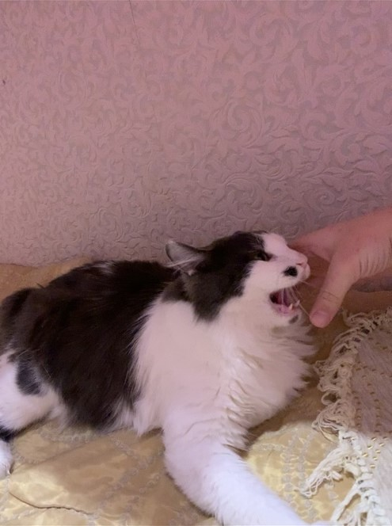
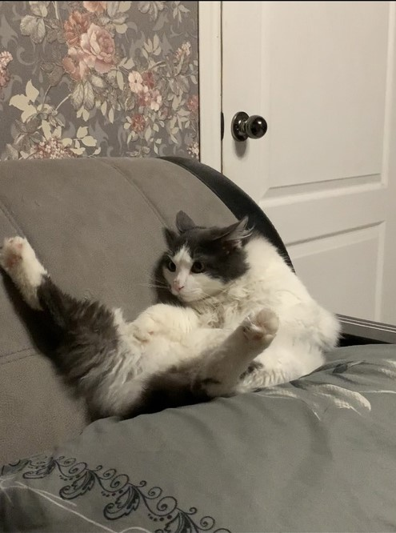

Изначально, котёнка купила себе мама моей девушки. И первый ,кто понёс его в новый дом ,был я. Там он жил год, мы его навещали, играли с ним. Чуть позже мы решили Макса познакомить с нашей кошкой Ксюшей, поэтому привезли его к себе домой, на неделю. Сначала Ксюша его не любила, фырчала, когда он к ней подходил, пряталась.
Поэтому Макс у нас долго не гостил. Но со временем мы стали чаще его брать к себе, потому что он очень клёвый кот. Да и Ксюша стала привыкать к нему-игралась с ним, бесились ночью, но близко она его к себе все равно не подпускала. А вот месяца 2 назад мы его забрали опять к себе, думали так же, на немного. Но он остался жить с нами, потому что мы к нему очень привязались, да и мама девушки не против, чтобы он жил у нас. Ксюша тоже почти к нему привыкла, подпускает к себе, но если он наглеет, то убегает от него. Теперь у меня появился еще один домашний любимец по имени Макс.
